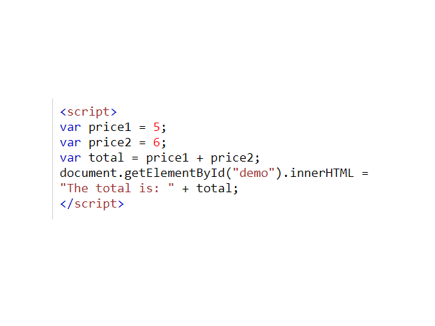
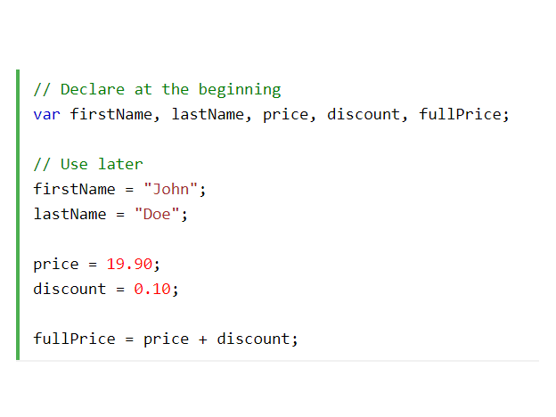
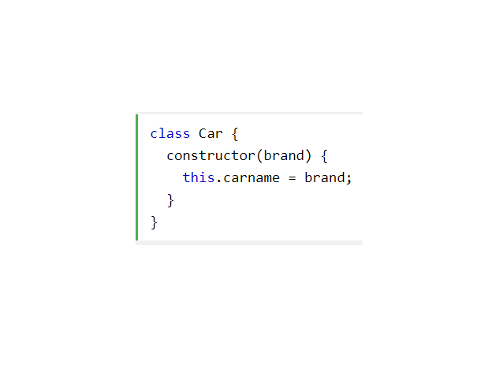

What is CSS?
CSS also known as cascading style sheets, defines how Html elements should be displayed on screen. Css helps saves time and work because the same styling can be used on multiple webpages. cSS sheets are of Three types. The Three types would be explained further below.
Embedded CSS
This type be used when it is nessasary to style an HTML file uniqely The CSS rule set should be within the HTML file in the head section.
Inline CSS
External CSS contains a file which only contains CSS styling by also using tag attributes. It should be linked to the HTML document using the link tab allowing the need to only style each element once for one of more HTML files

External CSS
External CSS contains a file which only contains CSS styling by also using tag attributes. It should be linked to the HTML document using the link tab allowing the need to only style each element once for one of more HTML files
CSS DEMO PAGES
The below links demonstrate how CSS could be used to syle your HTML file in multiple ways. The "CSS DEMO 1" link uses a blue and green colour scheme, while the "CSS Demo 2" uses a Purple colur scheme. Both links use the same HTML file but look completly differnt. The way the information has been prsented in both these links differ. They both also have a different type of animation each. "CSS Demo 2" also changes the layout when switched in a desktop view.
Click on the buttons bellow to check out some cool CSS styles
CSS Demo 1
CSS Demo 2
What is ECMAScript?
ECMAScript is standardized by ECMA International. It was created to standardize JavaScript to help integrate multiple independent implementations. JavaScript has remained comanly used implementation of ECMAScript since the standard was first published. ECMAScript is used for client-side scripting on the World Wide Web, and it is increasingly being used for writing server applications and services.
Assigning Variables
Containers used in ECMA script to stre various values of data is called a variable. In image mentioned below X, Y and Z are used as examples for variables.
Best Practices
It is considered a good proctice to declare all variables at the top of each scrip or function as this will make the code cleaner and much more efficient.
ECMA Classes
The keyword "class" is used to create a class in ECMA Script. The constructor() method should be called everytime the class object is initialized.
Coffee page
Click on the link below to be redirected to a Coofee Shop Page where you could see how ECMA script is used
Coffee Shop